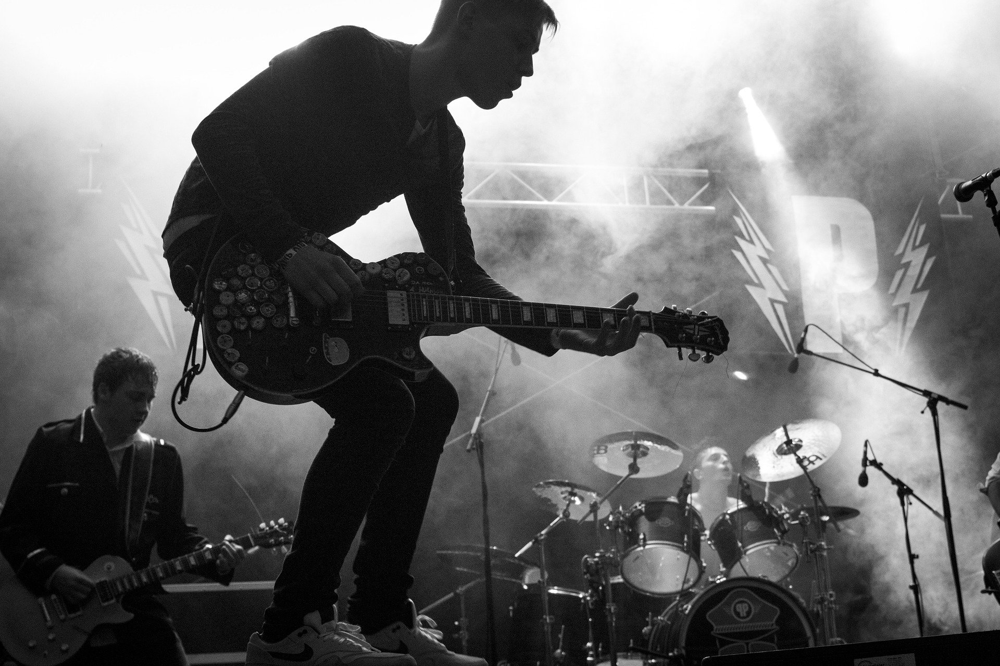

Bienvenue sur le Site de Théo Manelphe (Partie vocale est artistique)!

A propos de moi
J'ai pour plus grande passion la musique, depuis mes 5 ans je baigne dedans et je ne suis pas prêt d'en sortir, j'aime aussi beaucoup l'informatique donc pour moi ce serai idéal de lier mes deux passions ! Curieux hazard un tel métier existe et c'est celui de sound designer! J'aime également beaucoup les jeux vidéos et surtout les commentateurs même si je prefère travailler dans le sound design, je rêverai de devenir commentateur!
Un CV pour cette partie sera disponible prochainement, mon CV partie informatique est néemoins disponible
Voir mes compétences CV prochainement
Mes competences en musique / logiciels
Guitare sèche
star star star star star
Percussions simples (cajon, triangle....)
star star star star_half star_border
Solfège, Orchestre
star star star star_border star_border
Guitare électrique
star star star_border star_border star_border
Piano / Harmonica
star star_half star_border star_border star_border
Audacity
star star star star_half star_border
Reaper
star star star star_border star_border
Adobe Audition
star star star_half star_border star_border
star star star_border star_border star_border Cubase
FL Studio
star star_half star_border star_border star_border
Langues parlées
Français
star star star star star
Anglais
star star star star_half star_border
Espagnol
star star star_half star_border star_border
Chinois
star_half star_border star_border star_border star_border
